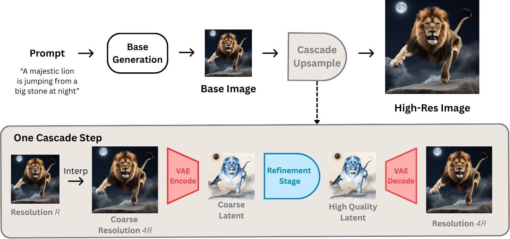
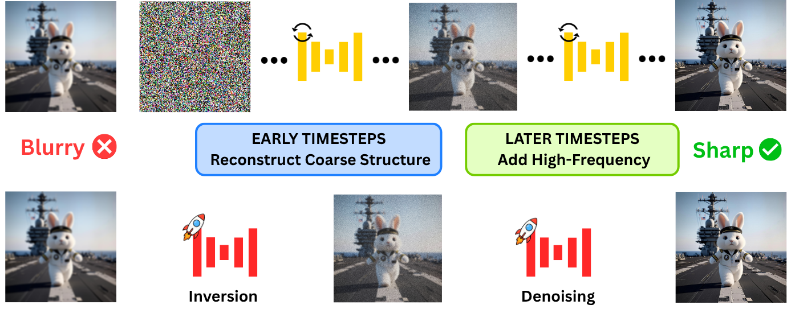
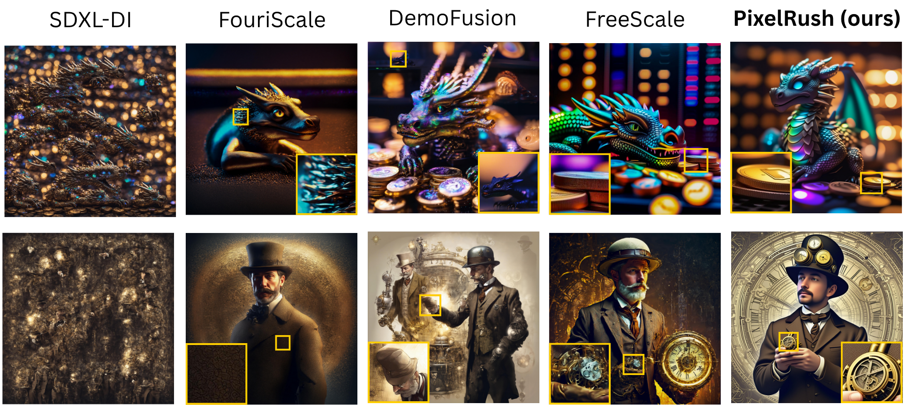
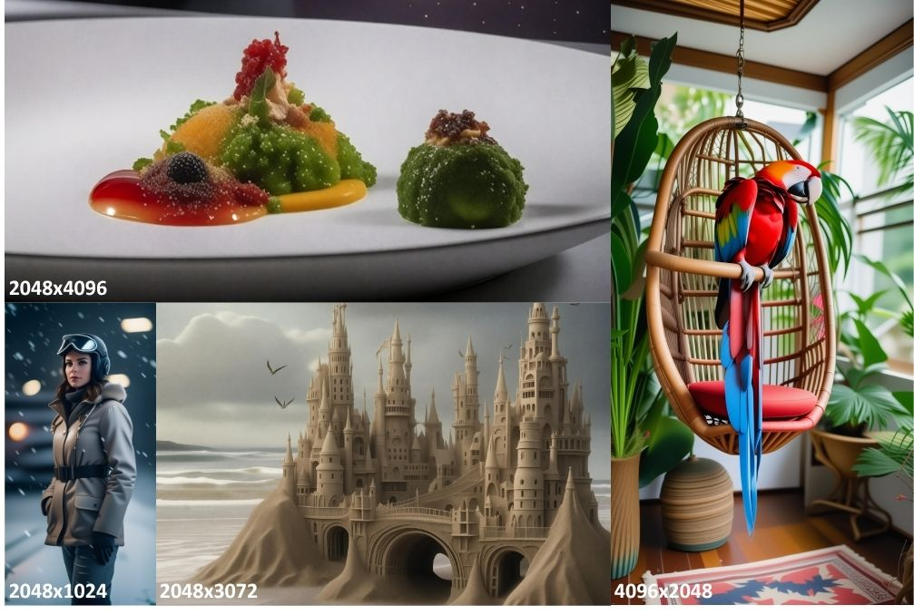

CVPR 2026
Qualcomm AI Research
Qualcomm AI Research is an initiative of Qualcomm Technologies, Inc.
Pre-trained diffusion models excel at generating high-quality images but remain inherently limited by their native training resolution. Recent training-free approaches have attempted to overcome this constraint; however, these methods incur substantial computational overhead, often requiring more than five minutes to produce a single 4K image.
We present PixelRush, the first tuning-free framework for practical high-resolution text-to-image generation. Our method builds upon patch-based inference but eliminates multiple inversion-regeneration cycles. Instead, PixelRush enables efficient patch-based denoising in a low-step regime. To address artifacts from few-step patch blending we propose Gaussian feathering; to combat oversmoothing we introduce a noise injection mechanism.
PixelRush generates 4K images in approximately 20 seconds — a 10–35× speedup over state-of-the-art — while maintaining superior visual fidelity across all quantitative metrics.
A training-free two-stage pipeline built on four targeted contributions. Click any card to expand.

Fig. 1. Base model generates coarse latent → PixelRush patchifies the upsampled latent → shallow DDIM inversion (K=249) → single-step SDXL-Turbo refinement → Gaussian-feathered recomposition. No training, no new weights.
Prior methods perturb to full Gaussian noise (T=999) and run 50 reverse steps. PixelRush inverts only to K=249 — the coarse latent already holds global structure, so the early prefix is wasted compute.
This alone yields a 3.7× speedup (67s→18s) with no quality degradation. The optimal K=249 aligns naturally with SDXL-Turbo's 4-step schedule, enabling single-step inversion and single-step denoising.
Partial inversion pairs naturally with SDXL-Turbo (1 step) for the refinement stage. The distilled model focuses its single step on high-frequency detail; the preserved coarse structure keeps it coherent.
Combined with partial inversion, this delivers a 10–35× total speedup. PixelRush is compatible with any few-step distilled backbone — SDXL-Turbo, SD-Turbo, Pixart-δ, and others.
Naive uniform averaging (MultiDiffusion) produces visible checkerboard seams in the few-step regime. We replace the hard binary overlap mask with a Gaussian-smoothed weight map.
Pixels near a patch center follow that patch more strongly; the boundary is a smooth gradient. This completely eliminates seam artifacts even with single-step refinement.
Few-step models over-smooth because they miss the cumulative high-frequency updates of multi-step chains. We inject randomness via spherical interpolation with fresh noise.
This flattens the data distribution and recovers sharpness. Crucially, the same technique degrades multi-step pipelines — it is specifically calibrated to the low-step regime.

Fig. 2. Prior methods perturb to full noise and spend early steps re-building global structure already present in the coarse latent. PixelRush skips directly to K=249, saving 75% of inference time.
PixelRush is orders of magnitude faster than every competing training-free baseline.
All times measured on a single A100-40GB GPU. PixelRush uses SDXL-Turbo (1 step); baselines use SDXL (50 steps).
PixelRush produces coherent, sharp outputs at both 2K and 4K — all baselines exhibit distinct failure modes.

Fig. 3. Top: 2K · Bottom: 4K. SDXL-DI: object repetition and unnatural textures. DemoFusion: structural duplication. FouriScale: repetitive grid artifacts. FreeScale: excessive high-frequency noise. PixelRush: sharp, coherent, artifact-free. Click to zoom.

Fig. 4. Patch-based refinement naturally extends to panoramic and arbitrary aspect ratios — no retraining or modification required.
Evaluated on 1000 prompts from LAION-2B Aesthetics. PixelRush achieves the best score on every metric.
* SDXL-Turbo (1 step). All baselines: SDXL 50 steps. FIDc = crops-based FID (local texture quality). Green = best.
Blind perceptual preference study — 30 participants, 25 diverse prompts, 750 pairwise comparisons vs. FouriScale, DemoFusion, and FreeScale.
Incremental ablation on 2K synthesis showing each component's independent contribution.
| Configuration | Steps | FID ↓ | FIDc ↓ | IS ↑ | Time |
|---|---|---|---|---|---|
| Baseline | 50 | 54.70 | 32.51 | 13.92 | 67s |
| + Partial inversion | 15 | 52.90 | 32.04 | 13.89 | 18s |
| + Few-step model | 1 | 57.23 | 35.66 | 13.65 | 4s |
| + Gaussian blend | 1 | 56.16 | 33.17 | 13.77 | 4s |
| + Noise injection | 1 | 50.13 | 29.13 | 14.32 | 4s |
All experiments at 2048×2048. Hover rows for commentary.
Partial inversion (67s→18s, 3.7×) confirms early denoising is wasteful — quality is preserved since the global structure remains intact.
Few-step model (18s→4s, additional 4.5×) temporarily hurts quality due to checkerboard and over-smoothing artifacts.
Gaussian blending (4s, same cost) partially recovers quality by eliminating seam artifacts.
Noise injection completes the recovery: FID drops to 50.13, actually better than the original 50-step baseline (54.70). The full pipeline is simultaneously the fastest and most accurate.
This page was built using the Academic Project Page Template, which was adopted from the Nerfies project page. This website is licensed under a Creative Commons Attribution-NonCommercial-ShareAlike 4.0 International License.